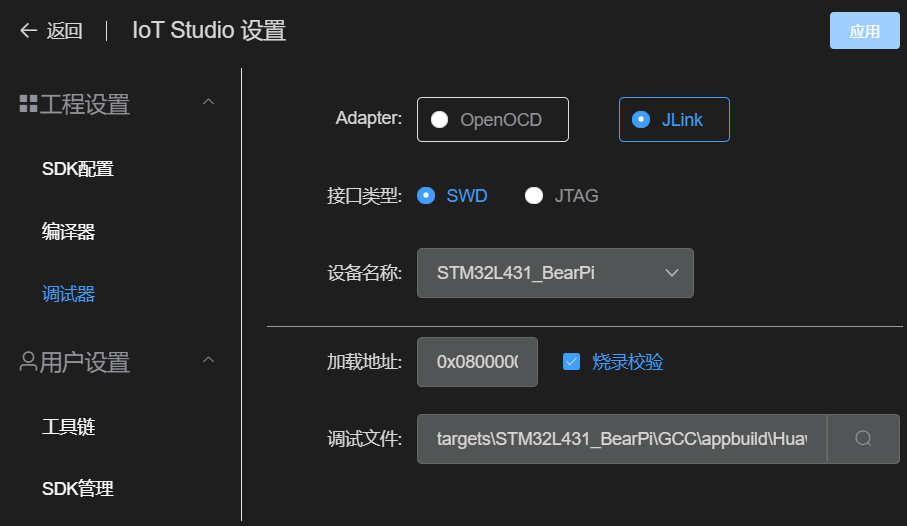

工程管理
创建工程
- 点击VSCode底部工具栏的‘Home’按钮

- 在弹出界面中点击‘创建IoT Studio工程’

- 输入工程名称，工程目录，并选择开发板的硬件平台
- 在下拉列表中选择示例工程模板
- 点击‘确定’，创建完成。
导入工程
- 点击VSCode底部工具栏的‘Home’按钮
- 在弹出界面中点击‘导入GCC工程’

- 选择工程目录
- 系统会自动搜索目录下的makefile文件，您可以下拉选择正确的makefile
- 选择开发板的硬件平台，系统会根据硬件平台生成默认配置
- 点击‘确定’，导入完成。
编译
- 点击VSCode底部工具栏的‘Compile’按钮
- 等待系统编译完成
编译相关配置
打开‘IoT Studio设置’--‘工程设置’--‘编译器’
- 您可以选择自定义的编译器路径，默认的${system_default}将使用‘IoT Studio设置’--‘用户设置’--‘工具链’配置的GCC工具目录。
- 编译使用的Makefile和Make参数可在此配置
烧录
- 将开发板用数据线与电脑连接（视需要安装对应开发板的硬件驱动）
ST-LINK驱动可在此下载:https://www.st.com/en/development-tools/stsw-link009.html
- 点击VSCode底部工具栏的‘Download’按钮
- 等待系统烧录完成
烧录相关配置
打开‘IoT Studio设置’--‘工程设置’--‘调试器’
OpenOCD方式

- OpenOCD路径一般使用默认，特殊的开发板（如RISC-V）需要修改
- OpenOCD参数需根据开发板配置，一般指定接口类型和硬件targets（默认已根据创建工程时的硬件平台配置好，无需修改）
JLink方式 
- JLink驱动需要单独下载安装
- 安装完成后在‘IoT Studio设置’--‘用户设置’--‘工具链’中指定JLink目录
- JLink调试器需指定接口类型和设备名称，支持的设备名称列表可在此处查询： https://www.segger.com/downloads/supported-devices.php
调试文件
- 调试文件默认会在编译后自动搜索编译目录的elf文件并自动设置。
- 您也可以点击文本框后面的搜索按钮手动触发搜索。
- 若识别的文件不是希望的调试文件，可以手动修改。